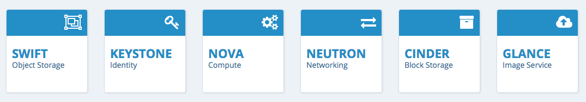

The Openstack website introduces OpenStack as a cloud operating system that controls large pools of compute, storage, and networking resources throughout a datacenter, all managed through a dashboard that gives administrators control while empowering their users to provision resources through a web interface. The Figure 1 gives an idea about Openstack as a cloud platform.

Figure 1: Openstack (Source:https://www.openstack.org/software)
Figure 2: The core services provided by OpenStack (Source:https://www.openstack.org/software)
Performance and scalability testing are essential to any software application.
In order to determine network performance certain measures such as bandwidth (maximum rate that information can be transferred), latency (the delay between the sender and the receiver decoding it) and throughput (the number of messages successfully delivered per unit time) are considered important. Scalability tests are used to determine the user limit for the web application and ensure end user experience, under a high load is not compromised.
Currently, there are limitations of Openstack Neutron, which establishes open networking services for the cloud. Apart from single point failures, one major limitation of Neutron is that it cannot scale, so therefore for test deployments Nova-networking must replace Neutron.